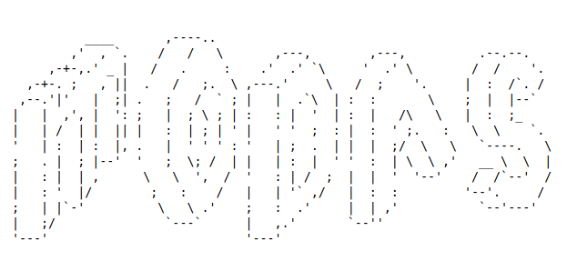

MODAS - Multi-Omics Data Association Study toolkit
MODAS (Multi-Omics Data Association Study toolkit) is an efficient software for high-dimensional omics data association analysis, featuring five main characteristics.
-
MODAS employs a novel whole-genome association study (GWAS) strategy to handle high-dimensional omics data. Specifically, MODAS generates pseudo-genotype files to reduce the dimensionality of the original SNP-based genotype data. It then performs block-based GWAS to identify significantly associated genomic regions (SAGR), and finally conducts SNP-based association analysis on the SAGR to obtain QTLs for high-dimensional omics data.
-
MODAS introduces Mendelian randomization algorithms to infer genetic regulatory relationships between molecular QTLs and phenotypic traits. This method helps to establish biological hypotheses and uncover potential genetic mechanisms.
-
MODAS uses contrastive PCA algorithm to uncover differential components in population omics data between different conditions. This functionality is particularly useful for identifying agronomically important genes involved in condition comparisons, such as genes related to crop stress tolerance.
-
MODAS employs an image matching algorithm to integrate multi-omics molecular QTLs, aiding in the elucidation of the genetic mechanisms underlying complex traits.
-
MODAS provides an HTML-based web interface for visualizing and querying GWAS results from omics data, facilitating further gene function exploration.
Download link: https://github.com/liusy-jz/MODAS
Demo data link: https://github.com/liusy-jz/MODAS_data
Demo data link2: https://zenodo.org/doi/10.5281/zenodo.11951520
Cite: Liu, S.Y., Xu, F., Xu, Y.T., Wang, Q., Yan, J., Wang, J.Y., Wang, X.B., and Wang, X.F. (2022). MODAS: exploring maize germplasm with multi-omics data association studies. Sci. Bull. 67, 903-906.
Contant us: modas_bio@163.com
Note: Academic users can download directly, industrial users first contact us.
